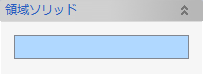
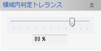
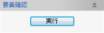
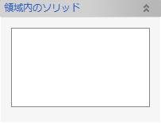
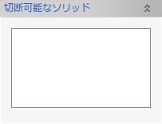
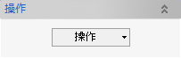
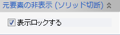
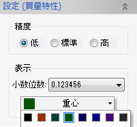

領域内要素検索
指示された領域内に表示されている要素を検索し、その結果に対して切断やグループ追加などの操作を行います。
操作方法
領域ソリッドを選択し、要素確認の実行を行うと、領域内のソリッドと切断できるソリッドを抽出できます。その後、ソリッドを切断したり、指定要素グループへ追加できます。
パラメータ
- 領域ソリッド

領域内外を判定するためのソリッドを選択します。
- 領域内判定トレランス

切断をせずに領域内として判定するための許容比率を設定します。
- 要素確認

ビュー上に表示されているソリッド要素が領域内に含まれているか判定し、結果を領域内のソリッドと切断可能なソリッドに分類し表示します。
- 領域内のソリッド

要素確認を実行すると、領域ソリッド内に含まれる表示要素（ソリッド）がリストに追加されます。また、手動で要素の追加や削除が可能です。
- 切断可能なソリッド

領域内ソリッドに一部含まれている表示要素（ソリッド）がリストに追加されます。また、手動で要素の追加や削除が可能です。
- 操作

結果の要素に対して以下の操作を実行できます。
- ソリッド切断
切断可能なソリッドを領域ソリッドで切断します。
切断後は領域内と領域外の2つのソリッドが作成され、元のソリッドは非表示となります。切断された結果を情報ウィンドウに表示します。
切断されたソリッドは「切断可能なソリッド」リストから除外されます。
切断後の領域内ソリッドは、「領域内のソリッド」リストへ追加されます。 - 要素グループに追加
領域内ソリッドを選択した要素グループへ追加します。

- 質量特性(領域内のみ)
領域内のソリッドに対して、質量特性を計算します。
- 質量特性(仮想切断)
切断可能なソリッドを仮想的に切断し、領域内ソリッド全体の質量特性を計算します。
- ソリッド切断
- 元要素の非表示 (ソリッド切断)

ソリッド切断後の元要素を非表示固定にするかどうか指定します。
- 設定 (質量特性)

質量特性の計算で使用するパラメータを指定します。
- 精度
計算精度を指定します。
- 表示
結果の値の表示桁数、重心、慣性主軸の表示色を設定します。
- 精度